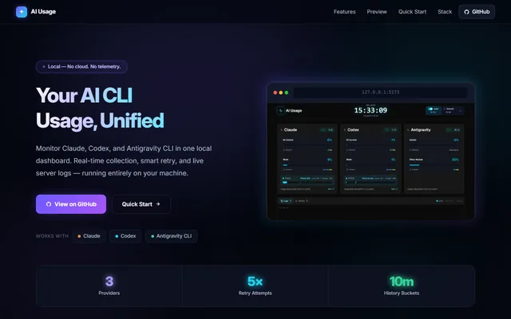
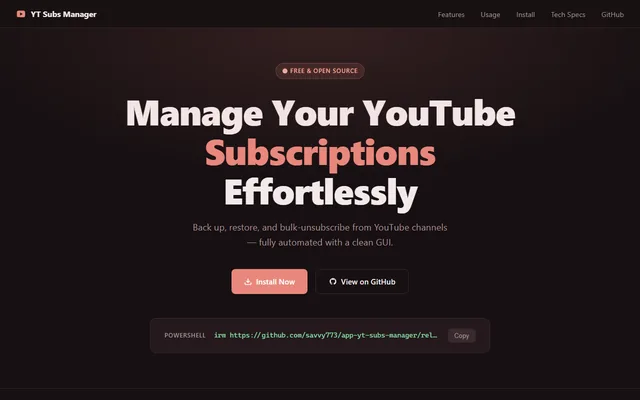
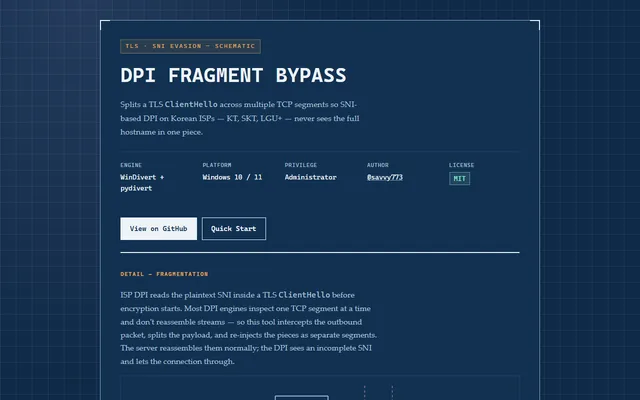
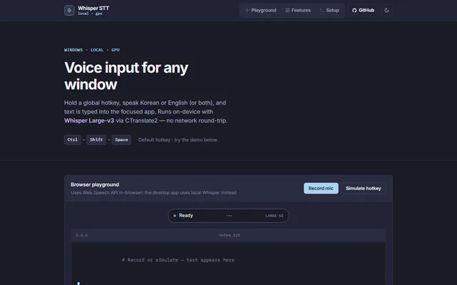
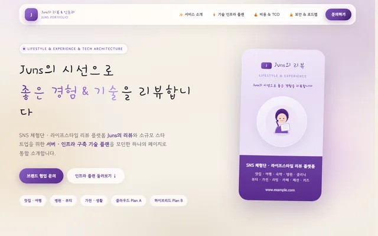
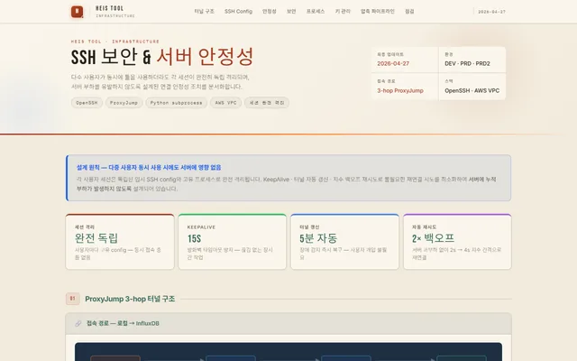
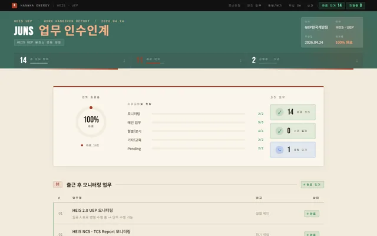
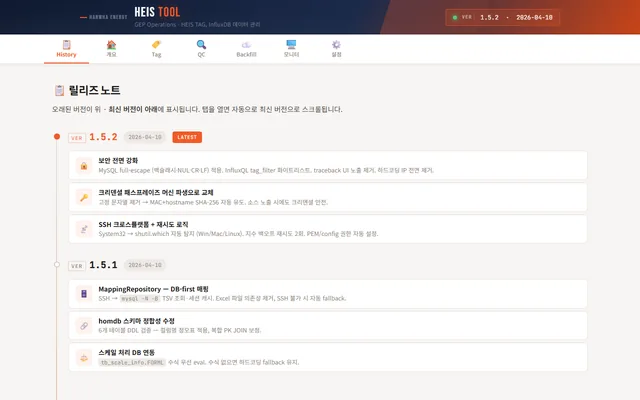
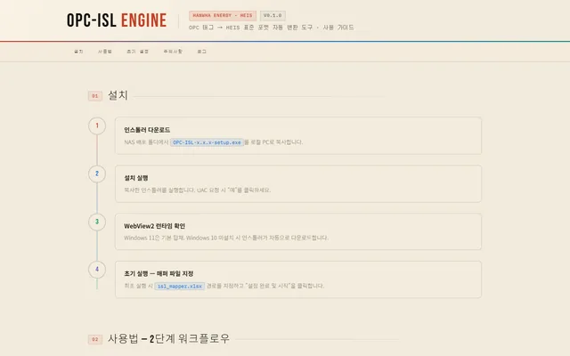

AI를 적극 활용하는 소프트웨어 엔지니어 · 자동화·데이터 연동·풀스택
한화에너지 GEP 개발팀에서 발전소 데이터 연동 업무를 담당하며 HEIS 플랫폼의 TAG 관리·QC 검증·Backfill·OPC 연동 업무 전반을 자동화 툴로 전환했습니다. Report 수동 취합 프로세스를 자동화해 해외 발전소 사이트 운영 효율을 개선했고, HEIS–SCADA 연동 QC 검증 체계를 확립했습니다.
LangGraph 기반 멀티 에이전트 오케스트레이션을 실무에 활용하며 APK 빌드 등 결과물까지 만들어낼 수 있는 역량을 갖췄습니다. 최근에는 게임 엔진·3D·영상 등 멀티미디어 영역도 다방면으로 함께 익히고 있습니다.
Live demos · open work

Claude·Codex·Gemini CLI 사용량을 한 화면에서 보는 로컬 대시보드. 클라우드 전송·텔레메트리 없음.

Flet + Playwright 기반 유튜브 구독 정리 앱. 채널 목록·구독 관리를 데스크톱 UI로 처리.

TLS ClientHello를 분할해 SNI 기반 DPI 차단을 우회하는 WinDivert 툴. KT·SKT·LGU+ 대응.

단축키로 어디서든 실시간 받아쓰기하는 온디바이스 STT 유틸. faster-whisper 기반 GPU 추론, 클라우드 전송 없음.
Power plant data · automation

SNS 체험단 라이프스타일 리뷰 콘셉트와 소규모 스타트업 서버·인프라 기술 플랜(Plan A/B)을 통합한 소개 페이지.

세션별 SSH 터널 완전 격리, 자동 재연결·프로세스 정리 등 HEIS Tool의 보안/안정성을 강화.

담당 업무 14건 중 11건 완료 인계, 핵심 자동화 SW 3종 후임 이관 (동료 실명은 비공개 처리).

TAG 관리·SQL 등록·QC 검증·Backfill·PVsyst 업로드를 하나로 통합한 자동화 툴로 확장.

발전소마다 다른 OPC 원본 태그를 HEIS 표준 Import 포맷으로 자동 변환하는 Windows 툴을 개발.